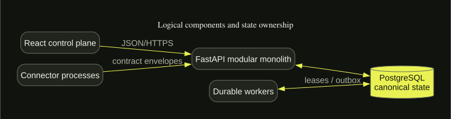

Security is a boundary, not a badge.
Trust boundaries
Browser, API, connector runners, OIDC issuer, PostgreSQL, operators, CI, backups, and downstream consumers are separate principals. Connector code runs outside the API process. Workspace identity is server-derived from verified claims.

Threat and abuse cases
Controls address token forgery, cross-workspace identifiers, SSRF and DNS rebinding, malicious imports, formula injection, resource exhaustion, XSS, CSRF/open redirect risks, path traversal, unsafe archives, connector credential leakage, workflow supply-chain exposure, stale approvals, job lease theft, audit tampering, and sink replay. Tests cover a subset; see the platform evidence matrix for exact status.
Residual risks
The alpha lacks browser OIDC code/PKCE sessions, SCIM, external secret-manager adapters, comprehensive field-level authorization, signed artifacts, and live vendor connector validation. It has not undergone an independent penetration test and makes no certification claim.
Private vulnerability reporting
Use GitHub private vulnerability reporting on the platform repository when the verified repository setting is enabled. Do not put secrets or exploit details in public issues. If that channel is unavailable, publication remains blocked until the repository owner establishes a private route.